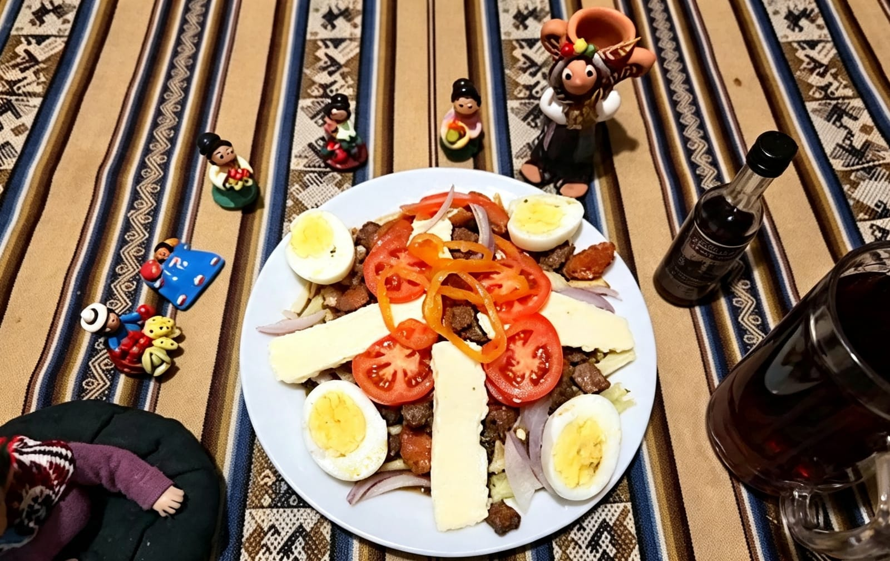
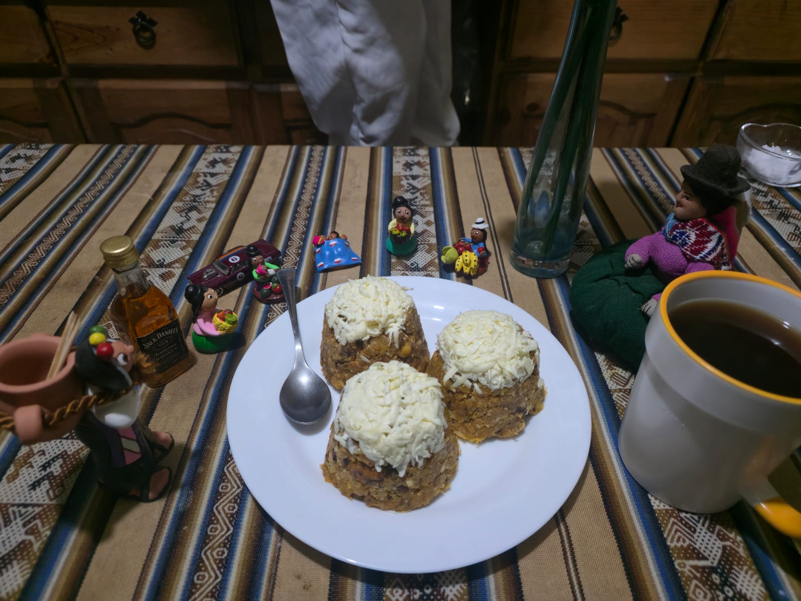
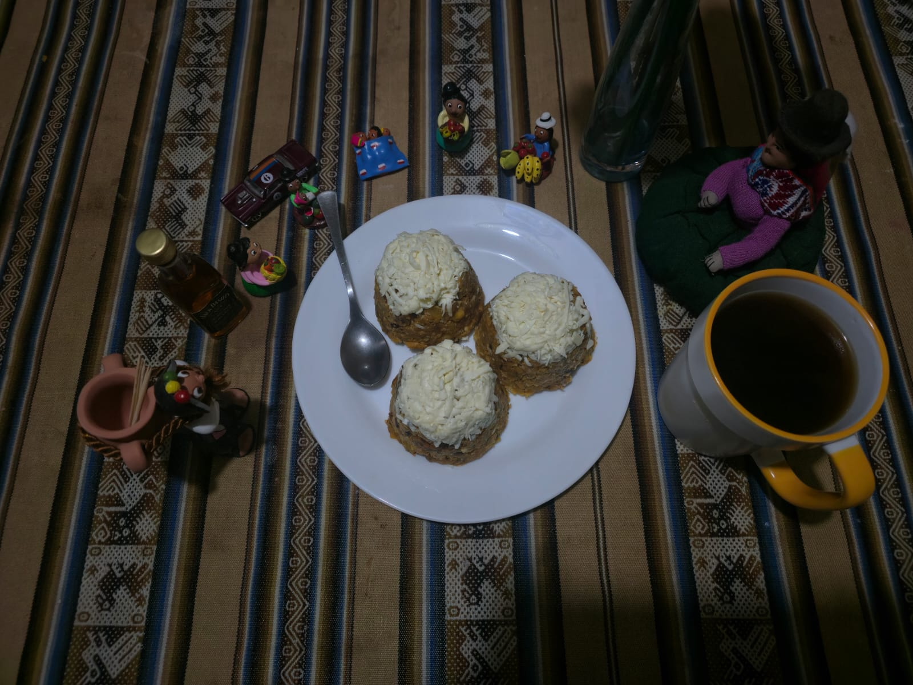
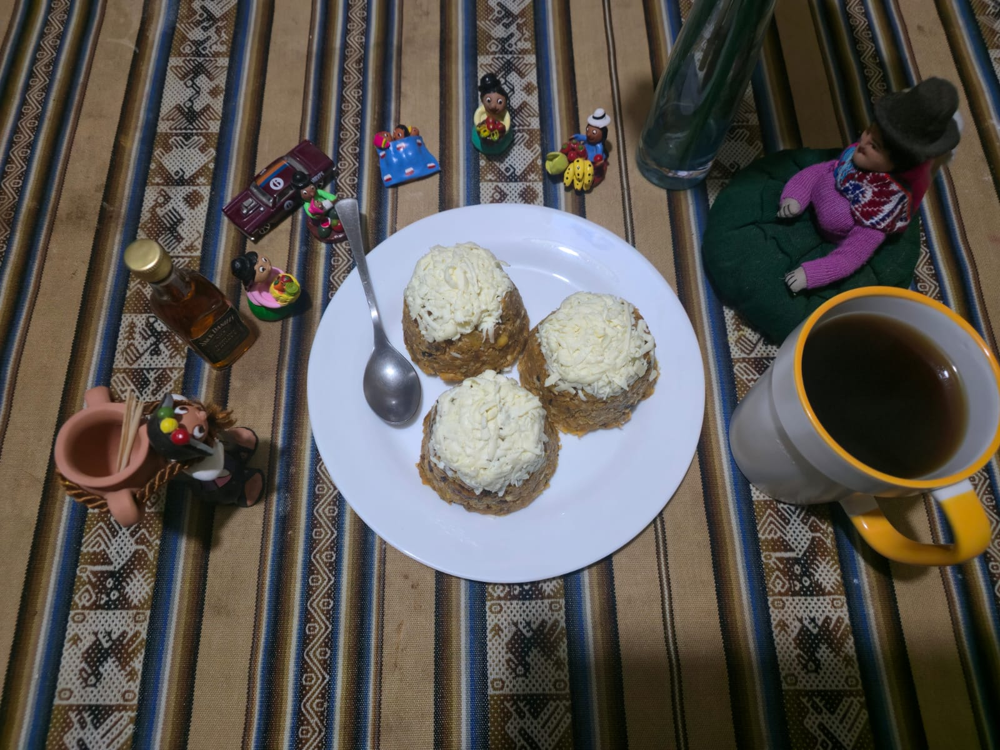

🍽 EL SABOR BOLIVIANO
Descubre los platos tipicos de los nueve departamentos del Bolivia Cada plato refleja la historia, cultura y tradición de su región.
Descubre los platos tipicos de los nueve departamentos del Bolivia Cada plato refleja la historia, cultura y tradición de su región.
La gastronomía boliviana combina ingredientes andinos, amazónicos y del valle, creando sabores únicos que representan la diversidad cultural del país. Cada departamento tiene recetas tradicionales transmitidas de generación en generación.

1. PREPARACION DEL CHOCLO: Quita los cabellos gruesos del choclo, Coloca los choclos en una olla profunda y cúbrelos con abundante agua fría, Pon la olla a fuego alto. Una vez que empiece a hervir, baja a fuego medio y cocina entre 25 a 35 minutos, hasta que los granos estén completamente tiernos.
2, PREPARACION DE LA PAPA: Lava muy bien las papas con agua corriente para eliminar toda la tierra, ya que se cocinan y sirven con su cáscara, pon las papas en una olla y cúbrelas con agua fría. Añade una cucharada de sal, cocina a fuego medio durante 20 a 30 minutos. Sabrás que están listas cuando las pinches con un cuchillo o tenedor y este entre con suavidad, o cuando la cáscara empiece a partirse ligeramente.
3. PREPARACION DE LA HABA: Lávalas bien. Se cocinan enteras, pero debes de cortar la parte superior e inferior de la haba para que lo del interior tenga una cocción perfecta y suave dentro de su vaina o cáscara verde. Colócalas en una olla con agua hirviendo y una pizca de sal. Déjalas hervir a fuego medio de 15 a 20 minutos. No te excedas de tiempo para que no se deshagan ni pierdan su color verde brillante.
4. PREPARACION DE LA CARNE: Condimenta los filetes de res con sal a gusto, una pisca depimienta, una pisca de comino, dos cucharillas de aceite, y dos cucharillas de salsa soya. Dejar reposar por 10 mn. para que agarre sabor. En una sartén con aceite bien caliente, fríe los filetes a fuego alto de 3 a 4 minutos por lado para sellar los jugos, logrando que queden dorados por fuera y blandos por dentro.
5. PREPARACION DEL QUESO: Corta el queso criollo en rebanadas rectangulares y gruesas (de aproximadamente 1.5 a 2 centímetros de espesor). Calienta media taza de aceite en una sartén a fuego medio-alto. Fríe las rebanadas de queso durante 1 a 2 minutos por lado, retirándolas apenas estén doradas y crujientes por fuera.
6. PREPARACION DE LA LLAJWUA: Tradicionalmente se muelen los ingredientes en un batán de piedra (o en su defecto, en una licuadora usando pulsos cortos).Proceso: Moler primero los locotos (con o sin semillas) junto con las hojas de quirquiña. Luego añade el tomate pelado y reduce todo a una salsa. Agrega sal al final.
El Plato Paceño nació en La Paz durante el cerco de 1781, cuando la ciudad tuvo escasez de alimentos. Se preparó con productos del altiplano como papa, habas, choclo y queso. Con el paso del tiempo se convirtió en un plato tradicional y en un símbolo de la identidad y cultura paceña, representando la historia y las costumbres de la ciudad de La Paz.

LAVAR Y PREPARAR EL CHARQUE: Primero debemos lavar el charque con abundante agua para retirar el exceso de sal. Después, lo colocamos en una olla con agua limpia para comenzar su cocción.
COCINAR EL CHARQUE: Luego debemos cocinar el charque en una olla con agua hasta que esté suave. Este proceso ayuda a que la carne sea más fácil de desmenuzar.
DESMENUZAR Y FREÍR EL CHARQUE: Una vez cocido, retiramos el charque del agua, lo dejamos enfriar un poco y lo desmenuzamos en trozos pequeños. Después, lo freímos en una sartén con un poco de aceite hasta que quede dorado y crocante.
COCINAR LAS PAPAS Y EL MOTE: Mientras se prepara el charque, debemos lavar las papas y cocinarlas en agua hasta que estén blandas. De la misma manera, cocinamos el mote hasta que esté bien suave
PREPARAR LOS HUEVOS Y EL QUESO: Después debemos preparar los huevos, generalmente fritos, y cortar el queso en porciones adecuadas para acompañar el plato.
SERVIR EL PLATO: Finalmente, colocamos el charque frito junto con las papas, el mote, el huevo y el queso. De esta manera obtenemos el plato de charque listo para servir.
Bajo el sol radiante de Oruro, una cocinera estira hilos de carne de llama deshidratada para freírlos hasta que queden perfectamente crujientes. En la gran olla de barro, los granos de mote blanco y las papas nativas se cocinan al vapor, inundando la cocina con un aroma ancestral. Al emplatar, corona la preparación con un huevo duro y una generosa rebanada de queso criollo frito que se derrite lentamente. Los comensales se reúnen alrededor de la mesa, mezclando cada bocado con una cucharada de llajua picante que despierta los sentidos. Esta herencia de los arrieros andinos transforma ingredientes simples en un festín dorado que celebra la resistencia y el sabor del altiplano boliviano.
LAVAR Y PREPARAR LOS INGREDIENTES: Primero debemos lavar muy bien la carne, las papas, el mote y las verduras que utilizaremos. También debemos preparar el ají y los demás condimentos para tenerlos listos.
COCINAR LA CARNE: Luego colocamos la carne en una olla con suficiente agua y la dejamos cocinar hasta que esté suave. Durante la cocción debemos retirar la espuma que se forme en la superficie
PREPARAR EL AJÍ Y LOS CONDIMENTOS: Después debemos preparar el ají colorado junto con la cebolla, el ajo, el comino y el orégano. Estos ingredientes ayudarán a darle a la kalapurca su sabor y color característicos.
COCINAR LAS PAPAS Y EL MOTE: Mientras se cocina la carne, debemos lavar las papas y cocinarlas hasta que estén blandas. También debemos cocinar el mote hasta que esté suave.
PREPARAR EL CALDO: Una vez que la carne esté cocida, agregamos al caldo el ají preparado y los demás condimentos. Dejamos cocinar todo junto para que los ingredientes se mezclen y el caldo tome buen sabor.
AÑADIR LAS PIEDRAS CALIENTES: La kalapurca se caracteriza por utilizar piedras calentadas al fuego. Con mucho cuidado y utilizando utensilios adecuados, se colocan las piedras calientes en el caldo para mantenerlo a una temperatura elevada.
SERVIR LA KALAPURCA: Finalmente, colocamos la carne, las papas y el mote en un plato y agregamos el caldo caliente. Servimos inmediatamente para disfrutar la kalapurca caliente.
Conversación en el Modo IA: dame una historia de 5 lineas del plato charquekanDijiste: dame una historia de 5 lineas del plato charquekandame una historia de 5 lineas del plato charquekanBajo el sol radiante de Oruro, una cocinera estira hilos de carne de llama deshidratada para freírlos hasta que queden perfectamente crujientes. En la gran olla de barro, los granos de mote blanco y las papas nativas se cocinan al vapor, inundando la cocina con un aroma ancestral. Al emplatar, corona la preparación con un huevo duro y una generosa rebanada de queso criollo frito que se derrite lentamente. Los comensales se reúnen alrededor de la mesa, mezclando cada bocado con una cucharada de llajua picante que despierta los sentidos. Esta herencia de los arrieros andinos transforma ingredientes simples en un festín dorado que celebra la resistencia y el sabor del altiplano boliviano.

1. PREPARACION DE DE LA CARNE : Se debe cortar la carne de res en cubos pequeños de tamaño bocado, una ves cortado se debe marinar o sasonar en un recipiente con el ajo molido, comino, la pimienta, la salsa soya y la sal al gusto
2. PREPARACION DE LA PAPA : Como segundo paso paso lavamos la papa y procedemos a pelarla, una vez acabdo de pelar la papa se debe cortar en forma de bastones no tan gruesos ni tan delagados, una vez hecho eso una sarten honda colocaruna cantidad de aceite mediana para que las papas se dores y salgan crocantes. se recomienda ver el paso 3 primero
3. PREPARACION DE LA SALCHICHA O CHORIZO : Se debe cortar la salchicha o chorizo en un corte diagonal no debe de ser delgado debe tener un grosor tipo bocado se debe dorar en una sarten, dejarlo a fuego medio para que se dore ligeramente, es recomendable hacer el paso 3 al mismo tiempo que el paso 2
4. COCCION DE LA CARNE DE RES : En una sarten hechar un choro de aceite y posterior a eso colocar la carne que se dejo marinando con las especias, cellas la carne para que no se escape el juego y el sabor, una vez que la carne suelte su jugo agregar la salchicha dorada y dejar cocer por 5minutos.
5. PREPARACION DE LOS HUEVOS Y EL QUESO : En una holla se debe llenar de agua hasta la mitad y se debe colocar los huevos con su cascara, se debe dejar herbir por almenos 10mn. , se debe de labar muy bien el queso y cortar en forma vertical
6. EMPLATADO : En un plato colocar primero las papas rodadas luego se debe colocar la preparacion que hizimos de la carne y lo decoramos con queso y rodasjas de tomate y tambien el huevo y como no unas rodajas de locoto y cebolla
El pique macho nació en Cochabamba, Bolivia, en la década de 1970 en el restaurante de Honorato Quiñones y Evangelina Rojas.Una noche, un grupo de pilotos llegó al local de madrugada buscando algo de comer cuando la cocina ya estaba cerrada. Doña Evangelina, usando lo último que le quedaba en la despensa, picó y mezcló carne, salchichas, papas fritas y abundante locoto picante.Al verlos sudar por el picor, los dueños los desafiaron diciendo: "Piquen si son machos". El plato fue un éxito rotundo y el nombre se quedó para siempre, convirtiéndose en un ícono de la comida boliviana.



LAVAR Y PREPARAR LOS INGREDIENTES: Primero debemos lavar los plátanos y la carne. Luego pelamos los plátanos y cortamos la carne en trozos pequeños para facilitar su preparación.
PREPARAR LOS PLÁTANOS: Pelamos los plátanos verdes y los cortamos en trozos medianos. Luego los cocinamos o freímos hasta que estén blandos y puedan ser machacados fácilmente.
MACHACAR LOS PLÁTANOS: Colocamos los plátanos cocidos o fritos en un recipiente y los machacamos con un utensilio hasta obtener una mezcla uniforme. Agregamos un poco de sal al gusto.
MEZCLAR LOS INGREDIENTES: fritamos los plátanos machacados.
DAR FORMA Y SERVIR: Finalmente, formamos el masaco en porciones y lo servimos caliente. Podemos acompañarlo con otros alimentos según la preparación tradicional de la región.
En las cálidas tierras de Santa Cruz, el aroma del charque tostado anuncia que el majadito cruceño está listo para cobrar vida en el perol. El arroz se tiñe de un dorado brillante gracias al urucú, mezclándose con el plátano de freír maduro que aporta su dulzura tropical. Sobre esta base perfecta, se acomoda un huevo frito de yema blanda y una porción de carne perfectamente machacada y crujiente. Cada cucharada combina la textura suave del grano con el toque crujiente y saladito de la res, creando una fiesta de sabores orientales. Es el alma de la gastronomía del oriente boliviano, un plato generoso que une a las familias en cada rincón del camba.
LAVAR Y PREPARAR LOS INGREDIENTES: Primero debemos lavar los plátanos y la carne. Luego pelamos los plátanos y cortamos la carne en trozos pequeños para facilitar su preparación.
PREPARAR LOS PLÁTANOS: Pelamos los plátanos verdes y los cortamos en trozos medianos. Luego los cocinamos o freímos hasta que estén blandos y puedan ser machacados fácilmente.
MACHACAR LOS PLÁTANOS: Colocamos los plátanos cocidos o fritos en un recipiente y los machacamos con un utensilio hasta obtener una mezcla uniforme. Agregamos un poco de sal al gusto.
MEZCLAR LOS INGREDIENTES: fritamos los plátanos machacados.
DAR FORMA Y SERVIR: Finalmente, formamos el masaco en porciones y lo servimos caliente. Podemos acompañarlo con otros alimentos según la preparación tradicional de la región.
El charquekan es un plato tradicional de Oruro preparado principalmente con charque de llama. Es parte de la gastronomía tradicional del departamento y se caracteriza por combinar carne deshidratada con papa, mote, huevo y queso.
1. Lavar y preparar el charque.
2. Cocinar el charque hasta que esté suave.
3. Desmenuzar y freír el charque.
4. Cocinar las papas y el mote.
5. Preparar los huevos y el queso.
6. Servir todos los ingredientes juntos.
El charquekan es un plato tradicional de Oruro preparado principalmente con charque de llama. Es parte de la gastronomía tradicional del departamento y se caracteriza por combinar carne deshidratada con papa, mote, huevo y queso.

1. Lavar y preparar el charque.
2. Cocinar el charque hasta que esté suave.
3. Desmenuzar y freír el charque.
4. Cocinar las papas y el mote.
5. Preparar los huevos y el queso.
6. Servir todos los ingredientes juntos.
El charquekan es un plato tradicional de Oruro preparado principalmente con charque de llama. Es parte de la gastronomía tradicional del departamento y se caracteriza por combinar carne deshidratada con papa, mote, huevo y queso.
1. Lavar y preparar el charque.
2. Cocinar el charque hasta que esté suave.
3. Desmenuzar y freír el charque.
4. Cocinar las papas y el mote.
5. Preparar los huevos y el queso.
6. Servir todos los ingredientes juntos.
El charquekan es un plato tradicional de Oruro preparado principalmente con charque de llama. Es parte de la gastronomía tradicional del departamento y se caracteriza por combinar carne deshidratada con papa, mote, huevo y queso.